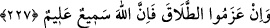

kasdından veya yemîni bozmuş olmasından kaynaklanan günahlarını affeder.
227. Eğer (müddeti içinde dönmeyip kadınlarını) boşamaya karar verirlerse
(ayırılırlar). Biliniz ki, Allah işitir ve bilir.
“Azm veya azîmet”, yapılması istenilen bir işi yapmaya kalbin kesin olarak karar
vermesi, demektir. Îlâ yapanlar, kendilerine tanınan dört ay müddet bitinceye kadar,
hanımlarına yaklaşmayı terk husûsunda sebât ederler ve böylece boşanmış olmak isterse
boşanırlar. Şüphesiz Allah onların talâklarını işitir ve ne maksadla bu işi yaptıklarını
bilir.
Cenâb-ı Hak kullarından hiçbirinin hakkını zâyi etmez. Kendisi kulun hakkını
tastamam ödediği gibi, mazlumun hakkını da zâlimden almaktan geri durmaz. Kadın,
âdetâ kocasının elinde imiş şeklindeki konumu sebebiyle gereken şekilde hakkını
müdâfaa edemediğinden Allah Teâlâ, onun hakkını gözetme işini üzerine almış ve
kocayı, tekrar hanımına dönmek ile onu boşamak şıklarından birini tercihe mecbûr
kılmıştır. İşte Hak Teâlâ, insan haklarının muhafazasına bu kadar büyük önem vermiş ve
bunlardan birini ihlâl edeni şiddetli bir şekilde cezâlandıracağını bildirmiştir. Buradan,
Allah hakkına karşı ne kadar çok saygılı olunup, îcâbının yerine getirilmesi gerektiği
ortaya çıkmaktadır.
Îlâ yapanların yemînlerden dönmeleri için tanınan dört ay müddet, rûhun cenîne
üfürülüş müddetidir. Nitekim Rasûlullah (s.a.) buyurmuştur ki: “Sizden birinizin
yaratılış maddesi, kırk günde anne rahminde derlenip toplanır.”
İbn Mes’ûd (r.a.)’dan rivâyet olunduğuna göre nutfe, rahme düşüp Allah Teâlâ ondan
insan yaratmayı murad edince, tırnakların altlarına ve saçların diplerine varıncaya
kadar kadının bütün vücûduna yayılır ve böylece kırk gece bekler. Sonra tekrar bir kan
hâlinde rahme iner.
İşte Rasûlullah (s.a.)’in hadîsindeki “cem”den; yâni menînin rahimde derlenip
toplanmasından maksad budur. “Sonra bu kan kırk günde alaka (embriyo) hâline gelir.
Sonra da kırk gün içinde bir çiğnemlik et oluverir. Sonra Allah ona bir melek
gönderir, melek de ona rûh üfler.”[168] Bu, çocuğa insan şeklinin verilmesinin üçüncü
kırk gün içinde olduğunu gösterir. Meleğe, Allah Teâlâ’nın hükmettiği dört şeyi
yazması emrolunur. Bu kelimeleri yazma işi kırk gün içinde olur. Melek de çocuğun
rızkını, ecelini; ne kadar yaşayacağını veya ne zaman öleceğini, amelini ve şakî mi,
yoksa saîd mi olduğunu yazar.
Şakî; cehenneme, saîd ise cennete gidecek kimselerdir. “Şâkî” nin, önce zikredilmesi,
insanların çoğunun şakî olduğuna delâlet eder.
Kâdî Beydâvî’ye göre çocukla ilgili olarak bu dört husûsun yazılmasından maksad,